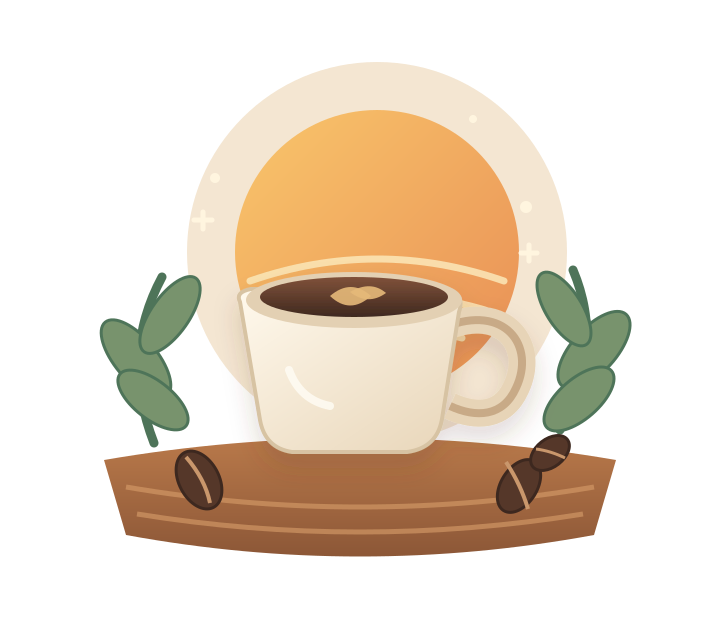

Bahan pilihan
Mengutamakan biji kopi dan bahan pendukung dari pemasok lokal pilihan.
UMKM KOPI LOKAL
Kopi Senja menghadirkan kopi pilihan dengan rasa yang akrab, harga bersahabat, dan cerita dari para petani lokal.
Dibuat dengan sepenuh hati
Untuk menemani cerita setiap hari.

CERITA KAMI
Kopi Senja adalah konsep usaha mikro, kecil, dan menengah (UMKM) fiktif yang bergerak di bidang minuman kopi. Kami ingin membuat kopi berkualitas terasa lebih dekat dengan semua orang.
Kami memilih biji kopi dari pemasok lokal, meraciknya dengan teliti, lalu menyajikannya dalam pilihan menu yang sederhana dan mudah dinikmati.
Selengkapnya tentang Kopi SenjaYANG KAMI JAGA
Prinsip sederhana dalam setiap produk Kopi Senja.
Mengutamakan biji kopi dan bahan pendukung dari pemasok lokal pilihan.
Menu diracik supaya mudah dinikmati, baik oleh pemula maupun pencinta kopi.
Menjadikan secangkir kopi sebagai teman untuk jeda, ide, dan kebersamaan.
TEMUKAN FAVORITMU
Lihat pilihan menu dan harga Kopi Senja.